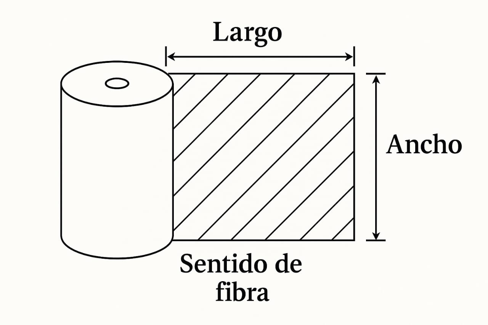

<div class="modal" [ngClass]="{ 'is-active': nueva }">
  <div class="modal-background"></div>
  <div class="modal-card long animate__animated animate__fadeInUp">
    <div class="modal-card-head">
      <p class="modal-card-title fuente">Conversión de material</p>
      <button class="delete red_cross" aria-label="close" (click)="cerrar()"></button>
    </div>
    <div class="modal-card-body">
      <div class="columns">
        <div class="column">
          <span class="title"> Convertidora </span>
          <hr />
          <div class="field is-grouped">
            <div class="control">
              <label for="" class="label">Convertidora</label>
              <div class="select">
                <select [(ngModel)]="convertidora">
                  <option value="{{ convertidora._id }}" *ngFor="let convertidora of api.convertidora">
                    {{ convertidora.nombre }}
                  </option>
                </select>
              </div>
            </div>
            <div class="control">
              <label for="" class="label">Compra local</label>
              <input type="checkbox" name="" id="" class="checkbox" />
            </div>
          </div>
          <div class="field is-grouped">
            <div class="control" *ngIf="convertidora">
              <label for="" class="label">Sustrato</label>
              <div class="select">
                <select [(ngModel)]="sustrato" (change)="obtenerLotes($event.target)">
                  <option value="{{ material._id }}" *ngFor="let material of buscarSustratosDeBobinas()">
                    {{ material.nombre }} {{ material.gramaje }}(g/m²) {{ material.calibre }}pt
                  </option>
                </select>
              </div>
            </div>
            <div class="control" *ngIf="sustrato">
              <label for="" class="label">Ancho (cm)</label>
              <div class="select">
                <select [(ngModel)]="ancho">
                  <option value="{{ ancho }}" *ngFor="let ancho of buscarAnchos()">{{ ancho }}</option>
                </select>
              </div>
            </div>
            <!-- <div class="control">
                            <label for="" class="label">Ancho (cm)</label>
                            <input type="text" class="input" style="width: 150px;">
                        </div> -->
          </div>
          <div class="field is-grouped">
            <div class="control">
              <label for="" class="label">Lote</label>
              <div class="select">
                <select [(ngModel)]="lote" (change)="agregarFabricacion()">
                  <option value="{{ lote }}" *ngFor="let lote of api.ObtenerLotes(convertidora, sustrato, ancho)">
                    {{ lote }}
                  </option>
                </select>
              </div>
            </div>
            <div class="control">
              <label for="" class="label">Largo (cm)</label>
              <input type="number" name="" id="" class="input" style="width: 90px" [(ngModel)]="largo" />
            </div>
            <div class="control">
              <label for="" class="label">Hojas (und)</label>
              <input
                type="number"
                name=""
                id=""
                class="input"
                style="width: 90px"
                [(ngModel)]="hojas"
                (input)="calcularToneladas()"
              />
            </div>
            <div class="control">
              <label for="" class="label">Peso (t)</label>
              <input
                type="number"
                name=""
                id=""
                class="input"
                style="width: 90px"
                [(ngModel)]="peso"
                (input)="calcularHojasDesdeToneladas()"
              />
            </div>
          </div>
          <div class="field">
            <div class="control">
              <label for="" class="label">Observación</label>
              <textarea
                class="textarea"
                placeholder="Escribe una observación"
                style="resize: none"
                [(ngModel)]="observacion"
              ></textarea>
            </div>
          </div>
          <button class="button is-success" (click)="generatePdf()" [disabled]="disabled()">
            <span class="icon"><i class="fas fa-exchange-alt"></i></span>
            <span>Conversión</span>
          </button>
        </div>
        <div class="column">
          <div class="dimenciones" [style.width.px]="calcularWidth()">
            <div class="top-label">← {{ largo }} →</div>
            <div class="right-label">↑<br />{{ ancho.toString()[0] }}<br />{{ ancho.toString()[1] }}<br />↓</div>
          </div>
          <figure class="image is-5by3">
            
          </figure>
        </div>
      </div>
    </div>
  </div>
</div>
